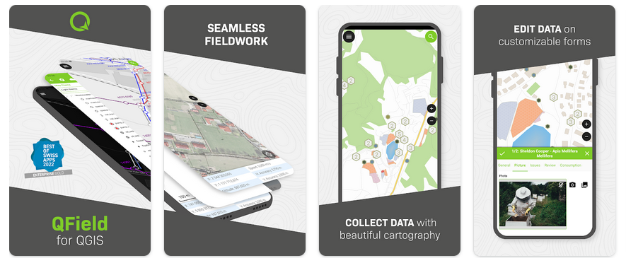

QField¶
SIG móvil¶
QField para QGIS es una interfaz táctil simplificada y optimizada para QGIS en el terreno. Incluye herramientas profesionales para la adquisición de datos con integración de dispositivos de posicionamiento de grado topográfico, así como compatibilidad con una amplia variedad de funcionalidades avanzadas de captura de atributos y cartografía móvil. QField está disponible para Android, iOS, Linux, MacOS y Windows.
Está perfectamente integrado con QGIS y para el desarrollo de ambos proyectos se colabora estrechamente.
{kind=link}
Características Principales¶
- Interfaz de usuario gráfica amigable:
identificar/seleccionar objetos espaciales
Editar/ver/buscar atributos
reproyección al vuelo
hermosa cartografía
captura de fotos y multimedia
comentarios automáticos sobre la calidad de los datos mediante restricciones
- Fácil visualización de varios formatos vectoriales y ráster
muchos formatos vectoriales: incluyendo ESRI shapefiles, MapInfo, SDTS and GML, OpenStreetMap vectors
Formatos Ráster como modelos digitales de elevación, fotografía aérea o imágenes landsat
servicios web en línea: WMS, WFS and OGC API
- Exportando datos
impresión a pdf
- Integración de sensores
Sensor posicional interno (GNSS)
Sensor posicional externo mediante NMEA (bluetooth, UDP, TPC)
La corrección NTRIP (RTK) puede activarse dependiendo del dispositivo
integración de sensores externos (radiación, gas, …)
- Sincronización
Sincronización de datos a través de QFieldCloud <https://qfield.cloud>
Estándares implementados¶
cumple con los estándares de la OGC (WMS, WFS, … )
Detalles¶
Sitio web: https://qfield.org/
Licencia: GNU General Public License (GPL) version 2
Versión de software: 3.3.11
Plataformas compatibles: Windows, Linux, Mac, Unix, iOS, Android
Apoyo de la comunidad: https://docs.qfield.org/get-started/support/
Soporte comercial: https://docs.qfield.org/get-started/support/
Nota
Este proyecto solo se incluye en el disco de máquina virtual OSGeoLive (VMDK)